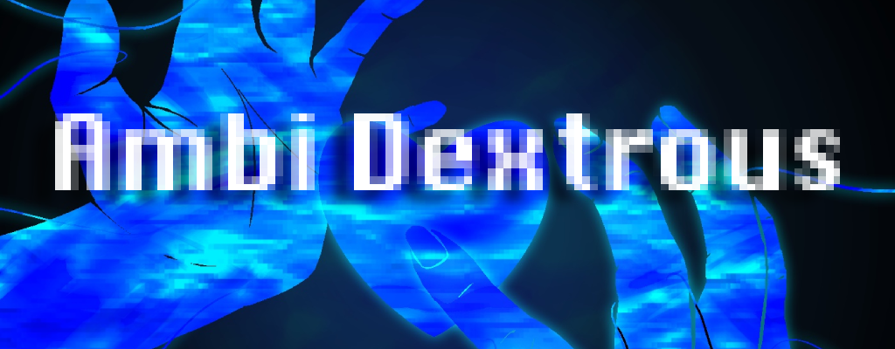
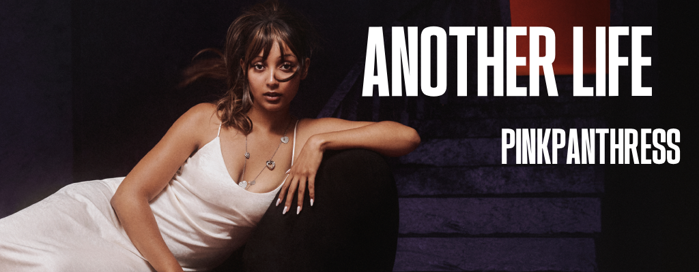
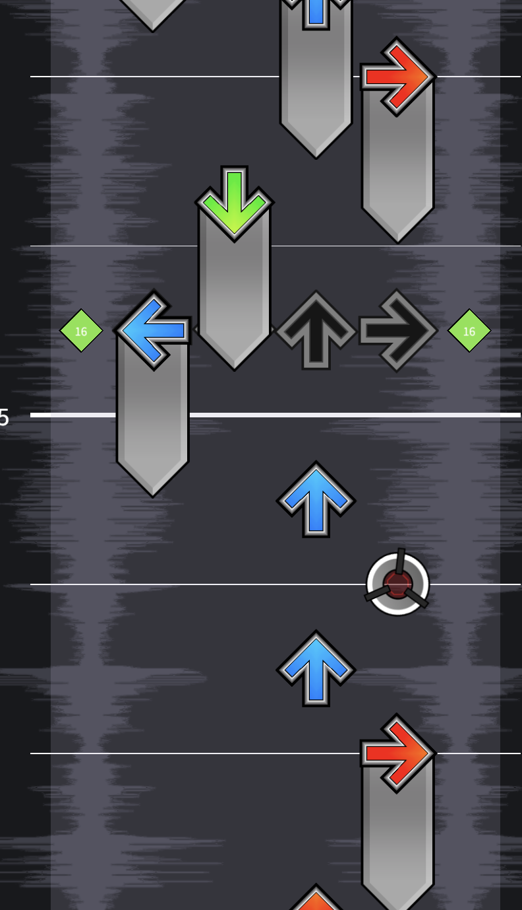
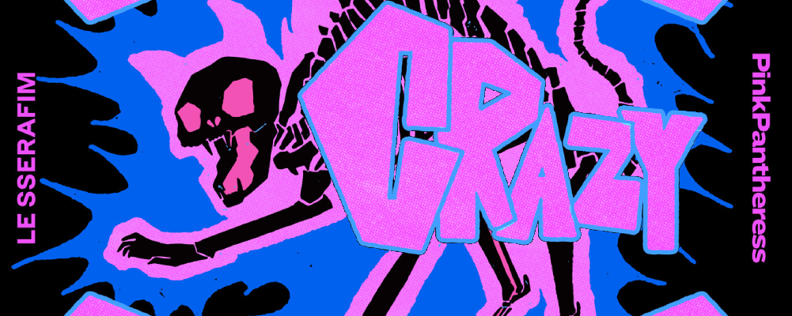
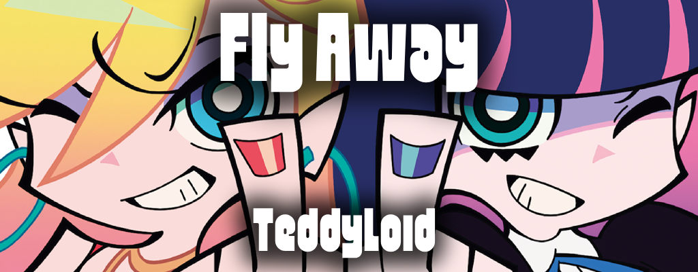
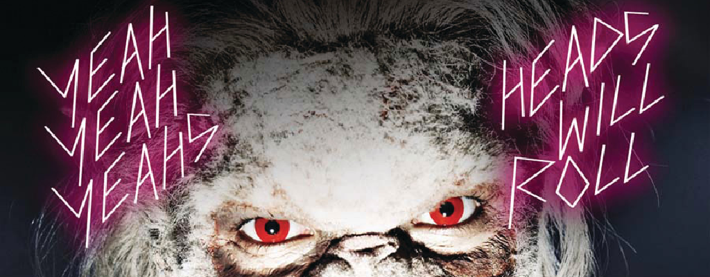
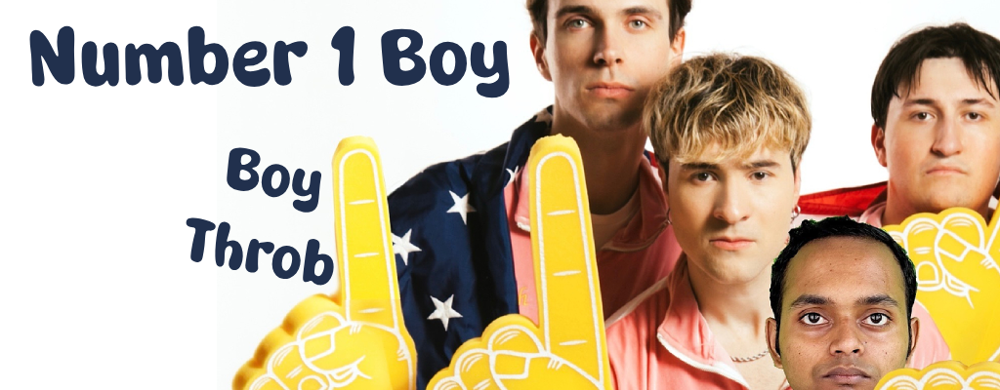
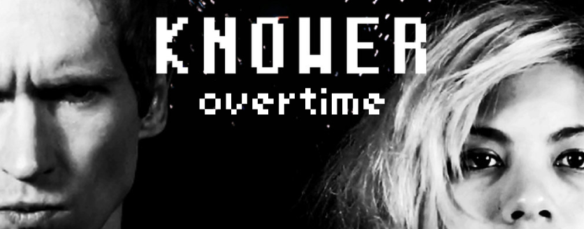
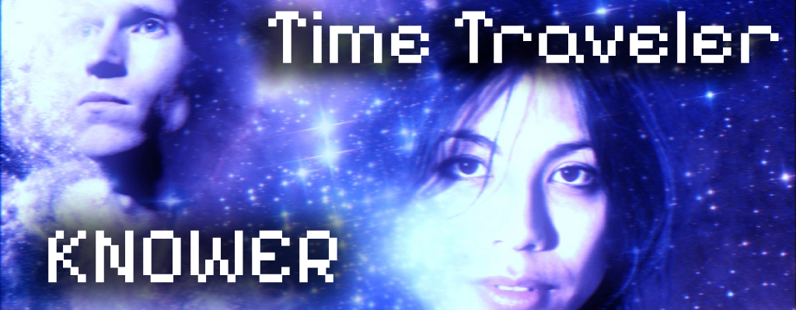
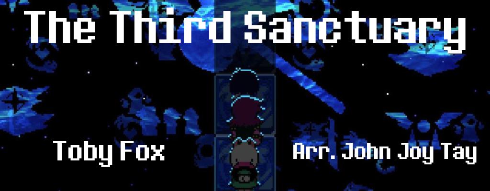

Ambi Dextrous
Table of Contents
Ambi Dextrous

Ambi Dextrous is a pack of tech charts for ITGMania, stepped by myself. The pack targets the 10-12 block range with difficulties spanning 7-13. Most charts have one difficulty (with one exception), and the pack is mostly streamy BXF, light on the X.
The pack is available via Google Drive here. It uses null sync.
This page holds some information about the charts, mostly as residual space for me to keep track of all the tasks I need to complete before releasing the pack. I have included some author scores from pad testing as light proof of playability1: I am a 300k RP level player and I played all these charts on a DDR J-cab in a single set (~3 tries on each chart), so the scores are not super optimized.
This is a smaller pack, which is intended to allow me to get feedback about my charting before I commit to something a bit more ambitious (e.g. a pack of 20 charts which does full lowers). If you play my charts I would love to hear what you think of them!
Songwheel
Another Life (feat. Rema) [SX10]

Tech Description - BXF
Author Score - 94.84 EX
The core idea in this chart is inspired by the 270 turns in Starstrukk [SX10], attempting to do something similar but with a 270 footswitch.

The important challenge here was making the resulting pattern resolve nicely if you do this 270 footswitch or if you doublestep this last crossover and play this as a normal forward-facing footswitch. These leave you in different states (one leaves you crossed over and one doesn't) so making it all work was a nice little puzzle.
The main difficult part of this chart is the Rema verse, which is just 157 bpm techy BXF stuff – this is what makes the chart harder than a 9 but it should all be pretty easy to read. I was pretty happy with how this one turned out.
Crazy (feat. PinkPanthress) [SX11]

Tech Description - HS BT FS
Author Score - 90.88 EX
I like how this chart turned out, I think the holdswitch theme fits the song really well. I was on the fence about including the "learning" notes at the start to establish the theme or not. I ultimately went with it, since everybody always draws these exact arrows when explaining how holdswitches work. Putting these right at the beginning of the chart with nothing threatening surrounding them feels like we're introducing a mechanic you will need to clear the stage later, when we need you to seamlessly transition from footswitch stream directly into this doublestep-holdswitch-bracket-tap idea.
Fly Away [SX11]

Tech Description - FS
Author Score - 93.79 EX
A streamy footswitch chart. The brackets make the chart more comfortable but you can jump them and get away with it for the most part, they aren't the core focus of the chart. It's a very streamy chart but it's pretty slow and the footswitches break up the stream a bit. It's like 16* - 7* - 7* @ 132 with techy breaks throughout, so I think 11 is pretty appropriate.
Heads Will Roll (A-Trak Remix) [SX10]
p

Tech Description - No Tech, 16 measures stream
Author Score - 93.72 EX
A pretty comfy no tech chart. The core idea of the chart is the alternating triangles in the stream, and everything is constructed around making those feel fun to play. Not much else to say here since it's the pack's no tech chart – hopefully it's the most straightforward chart in there.
Number 1 Boy [SX7]

Tech Description - DS XO SS XMOD-
Author Score - 91.32 EX
My wife asked me to step this, so I targeted a difficulty range she would enjoy. There are some cute ideas in this one, I think. I wanted it to feel like an old school ITG chart, as a part of it being funny. The bracket taps (woo!) are nicely separated from everything to evoke that they should be played as a hand like Bend Your Mind [SX10]. I like that the xmod gimmick in this highlights the joke in the song. It's comparatively hard to time the slow 12ths. Otherwise not too much going on here.
Overtime [SX12]

Tech Description - BXF ST
Author Score - 91.22 EX
This is a pure stamtech file, more or less. It's mostly stream throughout, with BXF during the stream. This much 138 is by itself pretty hard for a 12 I think (8 / 7-7 / 33), but I definitely think it's still just a 12 after playing it.
Stupid (Can't run from the urge) [SX12]
Tech Description - BXF ST
Author Score - 88.29 EX
I've had an older version of this file sitting on my computer for a really long time but was inspired to clean it up seeing this song get stepped by StarUndrscre in ITL 2026. I wanted this chart to be sort of like a cross between Waste My Time SX12 and Matt Silver SX14 (but less insane and slower than both songs).
Time Traveler [SX10]

Tech Description - BR, Gimmicks
Author Score - 86.95 EX2
Many thanks to Cookie for helping me figure out how the heck to do anything in this file.
The Third Sanctuary [SH9] [SX13]

Tech Description - [SH] FS++ XO SS- [SX] BR FS HT
Author Score - 94.56 EX / 81.59 EX
I wrote two difficulties for this because I had some difficulty briding the gap between this being a deltarune song and a breakcore remix.
The hard difficulty is an easy footswitch chart with some minor crossover elements here and there. I was tempted to leave it at 8 block, but I think compared to Cry For You from ITL 2026 this chart is like 40 bpm faster, has way more footswitches, and also has crossovers. There's also some mine avoid elements to this chart which make it a little more punishing.
The expert difficulty is a 180 bpm breakcore BRFS romp. I was able to pass it on pad in 2 attempts, so I'm pretty sure it's at most a 133. It felt appropriate for the pack to have some sort of boss monster, so here it is.
Footnotes:
This is common in stuff like trackmania, and I think Summer Vibes did it this year also. I don't have a setup I can play at home so my scores were before fixing the stuff that pad testing revealed, mostly affecting stuff like Time Traveler and Crazy.
This chart is not that hard, it was just a great example of why you have to pad test.
I think a lot of the BRFS patterns in this chart feel a little bit uncomfortable to play. It's pretty difficult for me to understand which parts of that are my skill at performing the movements, or with the charting itself. I think compared to stuff in the 11-12 block (which I play all the time) I don't have enough experience actually playing stuff in the upper blocks to have a solid grasp of the fun <-> difficult tradeoffs. I suspect my ability to chart uppers is probably one of the things I have the most space to get better at, both just by getting better at playing in this difficulty range and also by getting experience writing charts in general.
In general this is the chart I am the least satisfied with. But since the objective of this project is to optimize for getting feedback ASAP I think it's just something I have to live with – Perfect is the Enemy of Good.